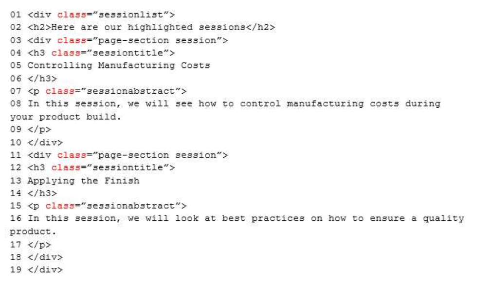

You have the following HTML markup within a page that lists the sessions of a conference. (Line numbers
are included for reference only.)

You need to use HTML5 to maximize Search Engine Optimization (SEO) for the page.
Which two changes should you make to the markup? Each correct answer presents part of the solution.
NOTE: Each correct selection is worth one point.
A. Replace the div element at lines 03 and 11 with <div aria-level=”2” class=”article”>.
B. Replace the div element at line 01 with <div class=”section sessionlist”>.
C. Replace the div element at lines 03, 10, 11, and 18 with article elements.
D. Replace the div element at line 01 with <div aria-level=”1” class=”page-section sessionlist”>.
E. Replace the div element at line 03 with <div class=”article”>.
F. Replace the div element at lines 01 and 19 with a section element.
Correct Answer: CF
Section: Volume D
Explanation
Explanation/Reference:
Reference: https://stackoverflow.com/questions/6939864/what-is-the-difference-between-section-and-div